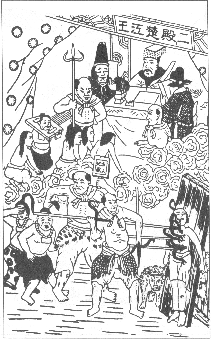
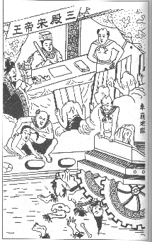
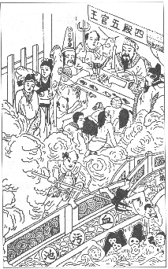
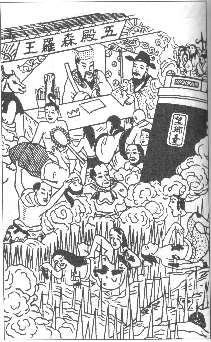
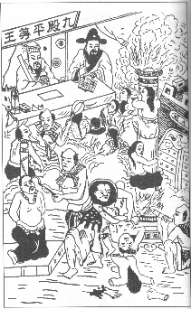

行善造德貧轉富，賤能轉貴難無，
福壽綿天上賜，子孫代代出賢嗣。
玉曆寶鈔
玉曆寶鈔贊序
玉曆實鈔勸世人，指明正理利有情，
教化世人知覺醒，免墜地獄上天庭。
行善造德貧轉富，賤能轉貴患難無，
福壽綿長天上賜，子孫代代出賢嗣。
閱讀正理報他人，轉送流通公德心，
經典善書信奉敬，諸佛諸神護持人。
典璧尼嘛尊者
玉曆寶鈔
目錄
第一章
重刊玉曆寶鈔的緣起/1
第二章
玉曆的圖像/21
第三章
為何有玉曆/51
第四章
玉曆的內容/55
第一殿
秦廣王/57
第二殿
楚江王/63
第三殿
宋帝王/68
第四殿
五官王/73
第五殿
閻羅天子/78
第六殿
卞城王/88
第七殿
泰山王/92
第八殿
都市王/101
第九殿
平等主/105
第十殿
轉輪王/111
醧忘臺與孟婆神/118
第五章 玉曆流傳的經過/123
第六章
玉曆的價值與流傳的考證/153
第七章 玉曆的事理可與各家學說互為印證/163
第八章 奉行、印贈玉曆的善報/201
第九章 不信玉曆的惡報/289
第十章 欲除去玉曆上所記載苦厄的辦法/341
第一章
重刊玉曆寶鈔的緣起
暨陽蔣薊的序
冥冥之中，不可思議的事非常的多；並非不符合科學原理，只是目前的科學無法證明而已。
人心不同，各如其面，然而趨吉避凶的想法，諒必人同此心。今天，世局將面臨大災難，戰爭隨時會發生。小至個人、家庭；大至國家、民族，如何能化解戰禍，逢凶化吉，實為諸具有仁心的人所共同禱求的。
其實，業隨心轉，要招吉或惹禍，全在人心如何運用而已。就如佛經中說：「種如是因，得如是果；一切唯心造。」
玉曆這本書流傳已十分久遠。我在民國廿九年任職於福建時，南洋煙草公司有住馬先生曾贈我一冊。詳閱內容，深覺是救世的良藥，濟人的跳板，十分可貴。
就在我送內人回上海的前二天，夢見一位穿黑袍的人，告訴我說：「這本書非常好，若能印送一千本，對你有很多的助益。」
我說：「好：」
醒後告訴內人，吩咐回上海後，記得印贈。
當時閩江因抗戰之故，已被封鎖。搭海輪須先到福清的碼頭搭船轉駁。搭帆船轉駁新安納海輪的人，擠滿了七艘帆船。其中六艘都遭颱風刮沈，只有內人所搭那艘，平安轉搭。
實在太不可思議了，善念才動，便獲神佛的庇佑。誠如太上威應篇中云：「夫心起於善，善雖未為，而吉神已隨之。」直是無半句虛言。
遷來台灣以後，內人目睹天下的災禍層出不窮，恐怕此書將來絕版，於是變賣首飾，再予印行。
我考慮到：在這一切崇不尚科學的時代中，難免遭到反對者的破壞攻擊；因此，不得不將親身的受益，真誠地提供出來。假若我的心有半點千名求譽，或虛假欺騙，願死墮阿鼻地獄；生受眾苦的折磨。
遺憾的是：僥倖躲過共黨之禍後，財力微薄，慚愧無法普偏印送，還要仰仗諸位善人與大菩薩們發心助印。
中華民國四十三年，甲午年中秋節
迴向偈
以此功德，普及一切；瞬即甫植，
瞬即蕃實。終皈三寶，皆共成佛。
浙江寧波府鎮海縣楊學棣以近時的靈驗記做序
古書有云：「作善降祥，作不善降殃。」又云：「善不積不足以成名；惡不積不足以殺身。」又云：「禍因惡積；福緣善慶。」又云：「萬惡淫為首；百善孝為先。」
可知：行善的人，其後必然昌盛。古人恭謹地告訴修身的人：要實實在在地行善。何況善惡報應的道理，是顯明而毫無差錯的；是千年不變的真理。
有些假藉神明以教化世人的文章，之所以不全是虛誕之言；我認為是一些讀書人，心存排斥佛教之偏心，乃藉著公正的神明，以圓通地教化世人之故，同時又可保護他的清名。
其實，因果報應的事，十分明確，且可查證。自古的聖賢，都是以不欺為主要的德行。因此，因果之事儒家有經書、注疏可供查考；在佛家來說，更是禁戒妄言。所以佛家重因果報應，自是不移之論；道家講至誠感應亦不外因果。凡此，全都有典籍為證。
聖賢仙佛萬萬不會以虛假誕妄的話來欺騙世人。教雖有儒、釋、道三種差別，卻同樣戒妄言。基於此理，那玉曆至寶鈔一書，豈會妄言欺世？
因此，古今報應的道理，全靠親自經驗；愈經驗愈知道有這樣的事；也就愈遵行。
所謂：「善惡到頭終有報；祇爭來早與來遲。」實在是萬萬不假之言。奉勸諸同胞，要遵信此言，努力做個行善之人。等到年歲一多，閱歷增長，必然體會善書中所說的報應，絲毫不差。
我幼年時，父親即教導，要積德救貧。因此謹記在心，不敢懈怠。只是天資愚笨，詩書無緣，未能成就功名，只好棄而學商。
自愧忠君愛國，顯親揚名的志願，已不能達成；繼而想到救濟天下蒼生，利益萬民，又何能做到？
況且命運坎坷，時運不佳，徒然胸懷滿天的志願；奈何一籌未成。而且年齡老大，年年虛度歲月，來生難知，必然空手而回。
假若不趕快回頭修行，學習覺悟之道；今日預種善因，期望來生獲得善果，必然死到臨頭，後悔已遲。
因此，在幾年前，敬送三聖經來勸人為善；並贈高王觀世音經，及大悲心陀羅尼神咒等書，引導人修行。
自從印經贈送之後，那想到已十六年未生產的內人，竟然老年有喜，一舉三子。如此功德報應，誠不可思議。
當初只想到印贈善書，勸人為善乃份內修行事，並未期望得福。沒想到承蒙 天神的保佑，如此的快速而無遺漏。實在令人信心益堅，誠意更真。信願益堅，心意更誠。
光緒三十年，又在本縣東嶽大帝前，叩求：印送玉曆至寶鈔勸世二千冊；放生一萬個生靈，以求得家母壽至百歲；內人病魔盡除；長子緒楙，生意順利；次子相緒，壽命延長；合家平安，事業昌盛。
自從還願後，又蒙神佛佑助，所有的事都一一如願。尤其家母今年五月間，病情嚴重，奄奄一息，我當空叩禱，立即安然無恙。
其餘各事，豈有不在冥冥中轉禍為福的？特別記下靈驗的事迹，當作自己時時的警惕，更加勉勵向善。希望人人以此書做為清夜的鐘聲，及早警覺。這是我百叩。百所厚望的。
以上述的靈驗事迹，現身說法，當作序言。
光緒三十二年十二月一日。
玉曆、全丹勸世合編的序
俗語說：「暗室虧心，神目如電；人問私語，天聞若雷。」可知：天理難以欺瞞，而鬼神無時無地不在鑒察善惡。
有人因一念的誠善，就暗中蒙神賜福；有人因一念的邪惡，就明顯遭天譴罰。往往不必表現於事實，而禍福已感應。此無他，善惡只在心念之間而已。
所謂福田就在心田，種什麼因，即獲什麼果，天理昭彰，絲毫無差。本來就不必去論報應，而報應自然就出現。
但是為何儒者認為因果報應與天堂地獄的說法，是佛家欺妄之言；只是藉此以愚惑婦人小孩呢？即使有著成書籍，如：太上感應篇、文昌丹桂籍、關聖覺世經，以及所有仙佛的寶訓之類，也往往認為是神道設教，迷信之談。
殊不知神道正可以補聖賢之不足。因為仁道不外乎人情，神道亦無非是仁道。假使所作所為，力求心安，無愧於天地；清夜自省，毫無差錯；那麼不但聖賢稱許，仙佛也必讚歎；即使鑒觀萬靈，威神顯赫的玉帝亦無不讚許。
因此，心地的靈臺，即是金銀宮殿，西方琉璃世界。言昱昱褐祿，都可由心去如意求取；此身所處的世界，即是天堂了。那還有牛鬼，夜叉來殺剛；刀山劍嶺可怖之境呢？
所以，聖賢總謹慎獨處時的清淨；君子敬畏於天地無形與他人之鑒察，深恐善心不堅，在暗室中有虧德行，而獲罪於天，以致禱求無門。
處在今天奸險詭詐的黑暗世界，想令人心殷發一線的光明；稍微挽救澆薄的風氣；而救度一切的苦厄，只有推廣，使人人閱讀玉曆至寶鈔一書，才有希望心中清明，而敬畏地不敢違犯。
我最初未見此書時，即堅信善招福，淫招禍的道理。而自結婚，十多年來未生子女。當我年輕強壯時，並不在意；但是，雙親年邁，急著抱孫。時常覺得沒有兒孫繞膝，頤養天倫之樂，而威到寂寞。
我暗中也想到，該有兒女以慰藉親心。而只有積善方能招感吉祥；當時雖未能廣行陰德，而行善的念頭，則時刻未離，不敢稍微懈怠。
沒想到，就這一念的善心才動，竟暗中感應神佛。七入年來，連生四男一女，都清秀可愛。因而更確信；禍福唯在人心，不敢不深切自勉；且進而期望天下的人，也如此自勉。
現在讀到玉曆寶鈔，見其中所記善惡果報的事，清楚無差，明確有據。它勸勉行善，戒懲惡行的用心，可謂苦口婆心，足以震醒迷妄。而勵行君子，警策愚昧；端正人心、佐助教化的事功，也盡皆在此了。
於是發大願，努力捐款，將本書與救世金丹，印贈流通。並在原本之外，增加「簡易良方」。這些經驗有效的方子，令偏僻無醫生的鄉間，便於取用，多少有助益。
期望天下樂善的大德，讀此書後，廣行印贈，俾使家有此書。人人以上天的仁心為居心，則自然諸惡不作，眾善奉行，福善綿綿，個個長壽，豈不是很好嗎？
民國三年春天，三月第一個已日，浙江寧波府慈溪樟橋鎮，
邵子建記於上海寓所
暨陽令先生的序
自古以來的讀書人，往往喜談玄妙的性理之學，而不談因果；論義理的是非，而不論報應，似乎已成當然之事。
然而易經云：「積善之家，必有餘慶。」書經云：「惠迪吉；從逆亡。」又說：「天道福善而禍淫。」可知：性理之學當中，包含了因果之理；義理的是非中，不悖報應之事，此為明證。
自從世風日敗以來，聖賢的經訓已不足警示冥頑不靈的人。這就是古德之所以設立神道以教化之故。
從友人處，得到玉曆寶筏一書。閱讀再三，實在令人愛不忍釋手。而且一打開書的封面，就有空心的心字，已寓有深意了，此為一般人易忽略處。
人以心為主宰；心愈空，愈明慧；心愈空愈靈通。能如此，卻不好行善，厭棄惡行的人太少了。因此，深刻了解到：要維持社會的教化，免於衰微；挽回涼薄的風氣，莫如玉曆寶筏一書，最為至好，最為至善。
我起初不相信，等到經歷了半輩子的磨練，而後才了解因果報應之事，確實絲毫無誤，且，信因果，必宅心良善。是以書中所引之事實，豈會欺騙我？
我不敢說此書閱後會令人自明善性，回復初心；只是希望世上讀此書者，確信信而有徵，而人人警醒、覺悟，同歸於善而已。
中華民國八年 月 日 後學暨陽余氏謹識
奉化陳際青的序
我承辦胡屬桃州司法事宜，已經一年多。地方的紳士金之淦先生，是州中的善士。時常贈送玉曆寶鈔勸世文一書。我在公餘之暇閱讀，深信人善惡的報應，絲毫不差。此書能夠警惕世道人心，功效不小。
世上的不肖之徒，往往做些損人利己的事。見惡即做，胡說行善無益。不相信陰間有地獄，難怪要現世受報了。
我在司法界工作，很快已五年。所審判的訴訟案件，雖自信力求合情合理，不敢稍涉意氣以判斷；然而人非神明，無心的錯，恐怕難免。於是印送玉曆至寶鈔勸世文一百本，以彌補我的過失；那敢說是行善？以此為序。
民國八年，歲次已未夏曆六月初一，奉化陳際青謹識於桃州官舍
高先生的序
陰間鬼神的事，接近於渺茫，一些相信科學的人不予置信；我為何深信不疑，且加談論呢？一般人必定笑我迷信。
天堂地獄的形成，全在人心一念的轉變。人有善念，即是天堂；人有惡念，便是地獄。因果報應，絲毫不爽。
就如我的朋友，高履德先生，自述因病中曾做奇異的夢，而後了解鬼神的事，就不是後人捏造的。
高先生是淮城人，字俊年。娶妻胡氏，十分賢淑。
民國二年夏天，高先生因為感慨時局動亂危險，時常悶悶不樂。有一天，酒醉後受了涼，覺得兩腿微痠，不能轉動。
醫生說：「這是腿膝風，恐怕不易治療。」經過半年，癱在床上，寸步難行，已成殘廢。
有一天晚上，高先生夢到一荒野，四下無人。正徘徊之間，忽然遇見好友戴先生，從遠方走來。略打招呼後，即扶著高先生往前走。
不久，見路旁有一涼亭，流水環繞，野花爭妍，風景絕佳。戴先生進入小亭休息，轉眼竟不見了。
高先生十分惶恐，勉強移動腳，走出亭的左側，見一間破廟。彷彿有「東獄行宮」四字，金字已模糊得幾乎分辨不清楚了。
廟的門緊閉著，高先生於是扶著牆而走。忽然，廟的後門開了。一位中年的出家人立於階沿上。左手繞著佛珠；右手則搔首望天，很閒適的樣子。
見到高先生行步艱難，就上前請問說：「居士！您的腳有病嗎？」
高先生說：「病重難醫啊！」
和尚微笑說：「此病不容易診治，不過我微知醫道；不知道與居士有沒有緣？請稍待一會：我去取治病的器具來！」
說完，返身入門，不到半刻鐘，就見和尚手中拿了好幾枝細小的毫針（針灸用）請高先生閉上眼睛，似乎在腿彎處刺入數針，也不太痛。一會兒，和尚喚說：「好了！好了！您的心地還算良善。有緣！有緣！」
高先生睜開眼睛，看見腿彎刺針之處，流出不少血。就要轉身叩謝和尚，才一舉步，忽然驚醒過來。
高先生就推醒太太，告以夢中所見。而從此兩腿行走，宛如常人。
第二天，夫妻即往城隍廟進香叩謝神明治疾之恩。可見人的心田，千萬不可存著損人利己的念頭。
現在，高先生見岳州易漢卿先生印送玉曆寶鈔百本勸勉人多種福田，心中感動，也要印送一百本，並求我記下此事做為證明。
民國九年四月，鄂州易補非謹識
平之山人讀後序讚
玉曆寶鈔救世經
淨空地獄上天庭
人間教化知覺醒
正理錄明社會寧
行善修身貫轉富
賤能變貴敬蒼天
綿長福壽家餘慶
世世子孫後嗣賢
寶鈔正理報他人
轉送流通功德真
經典善書皆信奉
慈悲都是護持神
第三章
為何有玉厝
教化幽冥世界眾生的 地藏王菩薩，在牠誕辰的那天，十殿閻王，和其他陰間的神明，都來合掌向袍參拜祝賀。
地藏王菩薩大發慈悲地說：「我憑著慈悲的願力，要來救度此道的眾生。奈何世間的人，行善的太少，作惡的多。這個去了，那個來，救度無有了期。應利用什麼好方法，使世人深信因果，纖悔罪行，截止所有的惡行，盡力行諸善事。改心向道，俾逐漸離開生死輪迴。一方面息止地獄的業因；另一方面使陰間的眾生，藉著子孫後代，所作的功德，很快得到超昇。」
當時，十殿閻王，恭敬合掌，同聲回答說：「考查世人善少惡多的原因，不外乎由於邪、惡二見之故。
邪見，就是：若非以為人死之後，便一切毀滅；執著斷滅的見解；要不，便堅持誤解：人永遠出生為人；畜生永遠出生為畜生的常見。因此，有的人盡情地自私自利，無所忌憚地行惡；有的人則把其他眾生當作自然的犧牲品。造成弱肉強食，殘殺爭奪的種種惡因惡果。
惡見的人，則為了隨順自己欺昧良心天理的偏私行為，倡導許多邪說；有的人則教人盜竊、邪淫；或否認因果、鬼神，引導人進入邪非之境；阻止人進入良善之地，造成共業的大災難。
現在預定將地獄道中，種種惡處，借著有德行的人，引導他進入陰間，作實地的觀察。記載下來，完成玉曆寶鈔一書。回到陽間，廣泛傳播，普偏地勸化世人。
假如有知道過錯，誠心殲悔，永不再犯，力行向善的人，准予從寬量罪、減少刑罰；或功過相抵，免予罪刑。
假如有兼善天下，推廣教化的人，所有已犯惡行，更優渥地予以衡量減罪；功過相抵，免予罪刑。若仍餘有善功，自然很快地獲得福報。若進一步能皈依、恭敬佛、法、僧三寶，精進勤勞地修持，則每日二十四小時中，諸佛菩薩必慈加護祐，關心；一切吉神，亦必守護、照顧。在世時，一切禍害不侵犯；壽終必往生西方極樂世界。」
地藏王菩薩說：「就這麼做，就這麼做！很好！很好！」
八月初三日，十殿閻王與所有的神明，又將所擬好的奏議，奏呈玉皇大帝。玉帝說：「太好了！太好了！往後所有的神明鑒察世人：假如有人發誓願意向善，在生時殲悔改過一件過錯，能夠不再觸犯，准予贖去二個罪刑。
假如纖悔改過，盡力實行，達五件之多，所有的罪刑，一概赦免。男子必定投生福德之地；婦女可以轉為男身。
如若改過的過錯超過五件的話，同時准其替祖先修福，超度眷屬的亡靈，脫離苦惱。
趕快將所奏的各條方法，編纂記載於玉曆；通行下界的城隍神、土地神、門神、毫神，眾鬼等知道。今遵守此旨，全部應恭謹，敬畏地奉行。」
平之山人詩讚：教化幽冥地藏王
勸人行善好心腸
離開生死輪迴道
世代子孫功德長
平之山人詩讚：十殿閻王上進言
良心啟發借游魂
修成王曆神明鑑
知論人間地獄門
第四章
玉曆的內容———
十殿閻王刑罰因由詳情的介紹
第一殿
秦廣王
第一殿
秦廣王
秦廣王的業務，專管人間的長壽與夭折、出生與死亡的冊籍；統一管理陰間受刑的吉、凶。
鬼判殿位居大海中、沃燋石之外，正西的黃泉黑路上。
凡是善人壽終的時候 有的接引往生天堂，或西方極樂。
如是功過兩半的男人、女人，死後送交第十殿，發放投生人間。有的男人轉生；有的女人轉生男人。各按照在世時所造的業力、因緣，分別去接受果報。
凡是在世惡行較多，善行較少的人，則引入殿右的高臺，名為孽鏡臺。
臺高一丈，鏡子大約十人圈圍。向東懸掛，上橫書七字：「孽鏡臺前無好人」
被押赴來的多惡行鬼魂，自然地見到自己在世時心地之奸險；以及死赴地獄受苦的慘狀。此時才知道：萬兩的黃金都帶不進去，一輩子只有罪孽隨著到地獄來。
照過孽鏡臺後，批解第二殿、開始分發地獄、運用刑具，令受諸種苦痛的刑罰。其罪刑與罪因詳情如下：
(一)自殺者的罪刑：
假如有世人，不去思考天地生人，父母養育身體，珍貴異常，恩重如山。父母恩、眾生恩、國王恩、三寶恩等四恩未報。未奉到勾帖，就擅自輕生、自殺、上吊、服毒、投水等等。除因忠孝節義的德行，犧牲生命，死後為神的之外，假若是因細小的忿恨，或因犯罪的羞事被發覺即率爾輕生，究其所犯罪刑，並未至死刑的地步。也有的想嫁禍、加害他人，而弄假成真，輕生氣絕的。以上諸種，門神、竈神，立即押解本殿，收入饑餓廠與乾渴廠。
這些自殺的鬼魂，每逢戌、亥日，完全如臨死時一般痛苦。一切痛苦的情境，照原來的樣子，再出現一次。有的七十天，有的一、二年之後，押解其魂魄，再回到尋死的地方，受悔恨折磨之苦。並且不許接受羹飯、紙帛等祭品的祭拜。
假如自殺的鬼魂自知殲悔，斂心守藏，不現出鬼影魅形來驚嚇人；也不亂找替死的人。那麼等遭他牽累的人，已經脫離牽累，是日，門神、竈神，仍然將此鬼犯押解到本殿，轉發第二殿。重新考查校對他的功與過，從重加刑，再另遞交各殿，配發地獄去受苦。
假如曾經生現形嚇人或找尋替死的心，或用這些言語嚇人、詐人；雖然未至於令人死亡；那麼即使以前曾經行諸善事，所有地獄也一概不准減免其罪刑。
若是輕生已死之後，毫不收斂鬼的形影，以致驚嚇、令人喪命的話；立即命青面撩牙的鬼役，勾到各地獄去受苦。滿一百日後，發配入阿鼻大地獄，永遠用鎖鏈弔扣住，不許超生。
(二)誦經漏脫字句之罪刑：
凡是出家人、道士、拿人的錢，為人拜誦經纖，遺漏字句、或頁卷的；就帶來本殿，發進補經所。各個送入內藏經殲，黑暗的小房間內。所有他所遺漏的字句之處，一概都簽寫明白，補誦清楚。
此處設有油燈，貯存數十斤的油。只用一根細線點，有時明亮、有時黑暗，不能一口氣就很快的補寫完足。
(三)修行起貪圖供養者的罪刑：
如果原本清淨修行的出家人或道士，卻發了貪心，枉求供養以享受的人，也得在此補經。
(四)誠心修行，弘揚佛法者之利益：
一般在家修持的善男信女或尼姑，十分誠心，心口。如地拜念一切經、咒、佛號。即使有錯誤、遺漏；然而重在誠心，而不重在字句。類此誠心修持之人，佛降匕日不用補經，每月初一，並將其功德記載於善籍之中。
世間之人，若於每年的二月初一日，向西方至誠地禮拜，學習阿彌陀佛甘靈王清淨，利益一切眾生的莊嚴萬德。將平常憶念行持佛德，及誦經、持咒、嚴守戒德的內功外德，發大願力，祈當生得證極樂世界的性德。並且發誓精進去修持，盡力地宏揚佛法，利益一切眾生。那麼壽終之後，立即蒙佛接引，往生極樂。
平之山人詩讚：
一殿閻羅秦廣王
註明生死判凶祥
善良引導天堂去
孽鏡台前無遁藏
第二殿
楚江王

第二殿
楚江王
楚江王主掌大海之底，正南方沃燋石下的活大地獄。
此地獄縱橫入千里（五百由旬）。另設十六小地獄：
一名黑雲沙小地獄。
二名糞尿泥小地獄。
三名五叉小地獄。
四名饑餓小地獄。
五名燋渴小地獄。（燋音。ㄐㄧㄠ，傷火也）
六名膿血小地獄。
七名銅斧小地獄。
八名多銅斧小地獄。
九名鐵鎧小地獄。（鎧音ㄎㄞˇ，甲也）
十名豳量小地獄。（豳ㄅㄧㄣ，古國名）
十一名雞小地獄。
十二名灰河小地獄。
十三名斫截小地獄。（斫音ㄓㄨㄛˊ，用刀砍劈）
十四名劍葉小地獄。
十五名狐狼小地獄。
十六名寒冰小地獄。
如在陽世曾犯以下罪惡：
(一)拐騙少年男女。
(二)欺佔他人財物。
(三)損壞人的耳目、手腳。
(四)介紹療效不明的醫生、藥物來謀取不道德的利益。
(五)役使的婢女，已經壯年，卻不讓家人贖回，恢復自由之身。
(六)在議結婚姻之時，為了貪圖對方的財富、地位，故意隱瞞自己的年齡，以詐騙婚姻。
(七)在二家尚未合婚確定之前，已確知男方或女方，實在是染有惡疾，重病，
或是姦邪、竊盜，品德低劣之人。為了賺取介紹費，不惜昧著良心，含含糊糊地掩飾過去，不將實情相告，以致誤人一輩子的幸福。
以上的罪惡的事迹，一一地考查所犯事件的多少，時問的長久，有沒有造成禍害，或變生嚴重的事端。
如有，即命令猙檸、赤髮等鬼，推入大地獄受苦。另外，也有應其罪惡之大小，發放到小地獄受苦的。以上受刑期滿，再轉解到第三殿，加重刑罰，並發入此殿之地獄去受苦。
世上的善男、善女，如有以下善行：
(一)常將玉曆申的內容，解說給人知道，使他知所警惕。
(二)或將玉曆印贈流傳。
(三)看到人生病，即為請醫生治療，或好藥相贈，期其早日康復。
(四)遇貧窮、苦難的人，就炊煮粥飯供食，或佈施金錢。已救濟多人的。
以上善行之人，若能同時悔改前非，則特恩准他將功抵過。其餘未能相抵的罪，則寬予勿論。在勾到之日，就交給第十殿，發放投生珍貴的人道。
如能愛惜眾生，不妄殺害生靈；訓示、勸導兒童，不要傷害昆蟲。
於三月初一日這一天，立誓、發願戒殺、放生的。
以上善行之人，命終之時，不用入所有的地獄，立即交給第十殿，發放往生福報深厚的地方。
平之山人詩讚：
二殿楚江王地獄
八千里大海茫茫
黑沙十六囚房小
糞水冰寒苦莫當
第三殿
宋帝王

第三殿
宋帝王
宋帝王，主掌大海之底，東南方沃燋石下的黑繩火地獄。
此地獄寬廣八千里（五百由旬），也另設十六小地獄：
一名鹹鹵小地獄。
一名麻繯枷紐小地獄。（繯音ㄒㄩㄢˋ，繫也）
三名穿肋小地獄。
四名銅鐵刮臉小地獄。
五名刮脂小地獄。
六名鉗擠心肝小地獄。
七名挖眼小地獄。
八名鏟皮小地獄。
九名刖足小地獄。（刖音ㄩㄝˋ，斬斷足）
十名拔手腳甲小地獄。
十一名吸血小地獄。
十二名倒弔小地獄。
十三名分
髃小地獄。（髃音ㄩˊ，肩前骨名）
十四名姐蛀小地獄。
十五名擊膝小地獄。
十六名割心小地獄。
如在陽世時，曾犯以下罪惡：
(一) 不認為領袖、主官的恩德最大，人的生命最重要。當官，有地位之時，對主官不忠誠，存心背叛，不顧恤人的生命。
(二) 執行公務人見了利益，就忘了道義，缺乏愛國、愛民之心
(三) 身為丈夫的人，不行道義。身為妻子的，言行不柔順。
(四) 身為養子，受長期養育的恩惠。等得到財產，立即忘恩負義，回去生父生母身邊的人。
(五) 佣人，或受人之託辦事，卻辜負、背叛。
(六) 職員或基層士官兵，背叛主管或長官。
(七) 為業主辦事，卻夥同同事詐財。
(八) 犯罪入獄，卻越獄潛逃。或者因罪押解他方，中途逃走。因為押運的官兵曾經具名連保，以致連累了這些官差的親屬。經過長遠的時間，未向事主殲悔，彌補其損失。雖然事後多做善事，仍然發入地獄，受諸重苦之刑。
(九) 為了講究風水的年運，以致阻止喪家出殯，埋葬。令亡者不得入土為安。
(十) 造墳挖土時，看見地下埋有別人的棺梆或屍骨，卻不馬上停止，換另外的龍穴。以致傷損他人的屍骨。
(十一)為人管事，私自偷竊，漏列金錢、糧食，占人便宜。
(十二)祖先的墓地不去祭掃，久而遺失蹤迹。
(十三)引誘他人犯法。挑撥是非，製造糾紛，欺騙人打官司，傷人和氣。
(十四)寫匿名信誣蔑別人。
(十五)亂寫公告，文章，毀損別人的名譽。
(十六)捏造退婚的字據，以幫人解除婚約。出偽造契約，來往書信，以詐取別人的錢、債券。仍本未加註明，也未簽名，隨便套描別人的簽名樣式，偽刻別人的印章。目的用以添加、刪改帳目，讓後人受害。
以上事件有違犯的，查對事情的輕重，派大力鬼先推入大地獄受苦。另外再依所犯事情之類別，配入小地獄受苦。
受刑期滿，再轉解第四殿，加重刑罰，收入地獄。
世人假若能於二月初八日，發誓立願，禁戒永遠不再違犯。死後就准許轉發別的福地，不用進地獄受苦。
平之山人詩讚：
三殿宋王黑火獄
鹹麻穿肋擠心肝
剷皮挖眼分髃
蛆 不義不忠千蟲攢
第四殿
五官王

第四殿
五官王
五官王掌管的地獄在大海之底，正東方沃燋下的合大地獄。此地獄寬廣各八千里（五百由旬）。也另外設有十六小地獄。
一名沯池小地獄。（沯音ㄏㄜˋ，水激石貌）
二名足鍊竹裁小地獄。（足音ㄨˋ始，長跪也，拜也。）
三名沸湯澆手小地獄。
四名掌流液小地獄。（音ㄆㄤˋ，面腫也）
五名斷筋剔骨小地獄。
六名肩刷皮小地獄。（音ㄧㄢˇ，、戟三刃者謂之，即 字）
七名鍴膚小地獄。（鍴音ㄉㄨㄢ，鑽也）
八名蹲峰小地獄。
九名鐵衣小地獄。
十名木石土瓦壓小地獄。
十一名戮眼小地獄。（戮音ㄌㄨˋ，削也）
十二名飛灰塞口小地獄。
十三名灌藥小地獄。
十四名油荳滑跌小地獄。荳（荳音ㄉㄡˋ，同豆）
十五名刺嘴小地獄。
十六名碎石埋身小地獄。
世人若犯以下事件者，配入此處：
(一)漏稅不繳。
(二)耍賴不給租金。
(三)買東西用重秤，以佔人家便宜。
(四)配合假藥，當真藥賣人，以誤人病機的。
(五)過水的米，仍當好米責人。
(六)買東西時用假銀子（錢）給商家。或者將零頭的錢扣下不給。
(七)賣一些惑人心思，引人虛榮的香油、香水、脂粉、絲綢、綾羅、等物品。
(八)路（車）上遇見玻足、殘廢的老人、幼童，不立刻讓路、讓坐。
(九)暗中霸佔，詐欺一些較無知識的鄉民，以及年老、幼小的人，或者肩挑販賣，辛苦賺取微薄利潤的人。
(十)受人託付，寄帶家書，不很快地交付給對方，誤人訊息。
(十一)竊取街道上鋪路的磚，或石塊，以及夜晚照明的燈、燭，造成交通危險。
(十二)窮人不安分守己，貪圖意外之財。
(十三)富人不憐老恤貧，多行救濟。
(十四)假如有人來借錢，起先答應借貸，到時候卻故意落空不借，以致誤了人家的大事。
(十五)見人生病，家中收藏有藥物，卻吝薔不提供出來。
(十六)有很有效的方劑，卻秘藏於己，不傳授出去。
(十七)煎過的藥渣、或碎碗、雜物、廢棄的器械，亂放在街道上，影響車、人的行走。（垃圾宜分類）
(十八)無緣無故養驢、馬等獸類，以致尿、糞妨礙行人或環境衛生。（動物宜圈養好）
(十九)田地無法耕作，不租給他人種植，故意荒蕪、廢棄。
(二十)損壞他人的牆壁。
(二十一)用咒語、法術、驅使鬼神，來捉弄人。
(二十二)亂造驚人之言，以驚嚇人。
以上事端，經查核所犯事件的大小，命令鬼卒，先推入各大地獄去受苦。再另外判發所屬罪業的小地獄，去受苦刑。期滿之後，再解放到五殿，考察審核其功過。
世人假在每的二月十八日這一天，發誓、悔改、不再違犯的話，可以免入本殿各地獄受若。
假如抄寫玉曆全書或者續加古今因果報的事迹，在各殿的章句之後，來勸化人為善，流傳後代，使閱讀的人從此悔改，免於犯錯，則暗中自有功德。
平之山人詩讚：
四殿五官王地獄
池務竹沸渴澆
斷筋剔骨飛灰塞
刺嘴埋身灌藥消
第五穀
閻羅天子

第五穀
閻羅天子
閻羅天子說：
「我本來是居於第一殿；因為可憐冤屈而死的人，屢次放還陽間伸冤，洗雪清白，所以降調司掌大海之底，東北方沃燋石下的叫喚大地獄。并管理十六個誅心小地獄。
所有分發到本殿的鬼犯，均已經前述的地獄，受罪很多年。亦即在前四殿查核沒甚麼大過錯的，每人各按七日之期，解到本殿。
這些人，在本殿也查不出絲毫作惡的事迹。其屍到五七日，沒有不腐敗的。
這些鬼犯都說：
『在世還有善願尚未完了。
有的說修理、建蓋寺院、橋樑、街路；開河溝，挖水井；或者輯集勸善的書與文章等等善事尚未完成。或是放生的數目未圓滿；父母尊親奉養或死葬之事尚未全備周到；另有受恩而未報答。』
為了以上等等事，哀求准許放還陽世。因此沒有一個不是立下誓願，一定做好人。
我聽了，說：
『你們以往在世之時，作惡昭彰，神鬼了解得非常清楚。現在如同已到江水中間的船，發現漏水，要補已遲了。可見陰間要是沒有怨恨的鬼；陽間就少有仇怨的人。真正修養德行的人，世間真是難得少有。
現在來到本殿的鬼犯，照過孽鏡後，自然知道自己是惡類。不用多說！牛頭馬面押上高臺去望鄉吧！』
所設高臺，名叫望鄉臺。
望鄉臺的面，半圓形，朝向東、西、南三向。此臺的彎面有八十一里；臺後乎宜，如同弓弦。
北方，以劍樹立為城牆。臺高四十九丈。以刀山為山坡，砌成六十三級的階。
善良的人，不用登上此臺；功過相半的人，已發放往生輪迴去了。
只有作惡多端的人，才登臺一望：
家鄉如在眼前；所有的男女家人，親友的言語、行為，都能看見、聽見。
看見老老少少，再也不遵從自己死亡前的吩咐與教訓：
所有自己以前決定的事全變換了，一件件地改掉。
辛苦掙來的財物，被搬運一空。
先生再娶小老婆；太太也再改嫁。
田地、財產、被亂瓜分了。
原本清楚的帳目，被貪污得混涸不清。
死人欠活人的帳，分文都難少；活人欠我的，由於失去證據，一概耍賴，惡形惡狀地搪塞掉。
所有的錯誤、罪惡，全推給死人。
所有父親、母親、妻子的族人，全懷怨地評論自己。
兒女個個心懷私心；朋友則失去信用。
略有幾個親友，想念自己在世的情分，撫棺哭幾聲；一回頭，馬上又冷笑兩聲。
以前在世時所造的罪惡，逐漸出現惡報；
兒子因犯罪，被繫入獄；或被壞朋友帶壞了。女兒則生了怪病；或被姦淫。
事業瓦解了；房屋被火燒了。大大小小的家產，很快地消耗光了。
其實，作惡得到報應的，又何只是陰魂呢？有些陽間的人，也會親見自己的惡報。
所有邪惡的鬼犯看了以上情景後，押入叫喚大地獄內。仔細地考查曾犯何種罪惡後，再分發進入誅心小地獄去受苦。
小地獄內，各地埋設危險的木樁；用銅蛇做成鍊子；用鐵鑄的狗做土堆，將人綑綁、壓制住手腳。再用一小刀，將人開膛破肚，鉤出心臟。一塊塊地割下來，心臟給蛇吃；腸子給狗吃。
如此受苦期滿之日，痛止皮膚完好，再分發以下各殿的地獄去受苦：
一名將不敬鬼神、猜疑是否有因果報應等心腸割掉的小地獄。
二名將殺害生命等心腸割掉的小地獄。
三名將善願未完，就先行罪惡等心腸割掉的小地獄。
四名將親近邪惡，行為錯誤、違背正理；學習方術，妄想長生等心腸割掉的小地獄。
五名將欺善怕惡，邪惡地怨恨他人，何不快死等心腸割掉的小地獄。
六名將計較名利、是非，移禍他人等心腸割掉的小地獄。
七名將強暴婦女；設計今婦女失貞；引誘婦女委員會地順從自己的淫意；或者不論有無謀害之意，與婦女貪戀滔樂等腸割掉的小地獄。
八名將損人以利己等心腸割掉的小地獄。
九名將慳貪不捨；不願佈施；不顧別人臨生死，緊急之困境等心腸割掉的小地獄。
十名將偷竊、盜取別人財物；昧著良心，耍賴而不還債等心腸割心腸割掉的小地獄。
十一名將忘恩負義，以仇報怨等心腸割掉的小地獄。
十二名將好鬥、好賭、好勝，以致牽連、拖累他人等心腸割掉的小地獄。
十三名將為了名利、欺騙、誘惑大眾等心腸割掉的小地獄。
十四名將自己雖未親自加害，但卻狠毒地教唆他人去害人，等心腸割掉的小地獄。
十五名將妒嫉善良、賢能等心腸割掉的小地獄。
十六名將執迷不悟，死不改過；誹謗他人等心腸割掉的小地獄。
世間的人，凡是犯了以下罪行，即入此等地獄：
(一)不信因果，阻止別人行善事。
(二)借名去廟寺拈香禮佛，卻談論別人的是非。
(三)燒燬勸善的書籍、文章。
(四)禮拜神、佛，卻吃食葷肉。
(五)厭惡別人念佛、誦咒。
(六)作佛事：如普渡、超渡亡魂，觀音法會、浴佛節等時，不茹素，不持戒，清淨身、口、意三業。
(七)誹謗學佛、修道的人。
(八)識字的人，不肯將古今報應的故事，勸世的文章，念給未識字的婦幼等人知道。
(九)挖掘別人的墳墓，再予以填平滅迹。
(十)放火蔓延，焚燬山林；或疏於防犯家人，以致失火延燒鄰居。
(十一)射箭或用槍枝，射殺禽獸。
(十二)引誘、逼迫疾病，瘦弱的人來比賽體力。令其自卑或傷身。
(十三)隔牆拋擲瓦石，誤傷行人。
(十四)用毒藥在河流中毒殺魚類。
(十五)放置射殺鳥類的火槍暗器；造捕殺鳥獸的絲網、黏竿，陷阱；或以鹽鹵、毒藥等灑於草地。
(十六)死貓、毒蛇等物不埋入深土申，以致有人挖出；留下的洞穴，害人喪命。
(十七)冬天春天寒凍時開墾，挖掘土地，令蟲類凍死；拆牆、改竈，致令人受寒受餓。
(十八)私人的身份，卻借用官家的頭銜，以勢力霸佔民地。
(十九)無緣無故填塞水井、水溝，致令人飲水不便。
如果違犯了以上各項罪事的，即押赴望鄉台，發入叫喚大地獄。
受苦之後，如果應該割碎心臟的，就押交給各層小地獄，判罪受刑。刑期滿後，轉解第六殿，查對有無其他的罪。
假如世人在世時，不論有否犯前項等罪事，能在正月初八日茹素，禁戒身口意清淨，誓願不再犯罪的話，不僅本殿各獄的刑罰可以避免，並且准許請求第六殿減輕刑罰。
除了殺生害命；親近邪惡；行為違反正理；男子姦淫毒害婦女；婦人貪淫、潑悍，妒恨；損害婦女名譽節操；偷盜財物，昧心耍賴；忘恩報怨；以及在生時執迷不悟，即使見聞勸善的文章句子，也不立即悔改的人以外，一概輕易地減刑。
平之山人詩讚：
五殿閻羅天子善
可憐冤屈去伸冤
望鄉台上誅心獄
不敬鬼神忘義恩
第六殿
卞城王
第六殿
卞城王
卞城王，掌理大海之底，正北方沃燋石下的大叫喚大地獄。寬廣八千里（五百由旬j。四周另十六小地獄：
一名常跪鐵砂小地獄。
二名屎泥浸身小地獄。
三名磨摧流血小地獄。
四名鉗嘴含針小地獄。
五名割腎鼠咬小地獄。
六名棘網蝗鑽小地獄。
七名礁肉漿小地獄。
八名裂皮擂小地獄。（音ㄐㄧˊ，亟也，急也）
九名銜火閉喉小地獄。
十名桑火烘小地獄。（音ㄅㄞˋ，吹火具）
十一名糞汙小地獄。
十二名牛雕馬躁小地獄。
十三名竅小地獄。（音ㄆㄧ，鋮也）
十四名頭脫殼小地獄。（音ㄓㄨㄛˊ，擊也）
十五名腰斬小地獄。
十六名剝皮揎草小地獄。（揎音ㄒㄩㄢ，揭開）
世人若犯以下罪事，即入此地獄：
(一)怨天尤地；討厭風，咒罵雷；喜歡晴，厭惡雨。
(二)對著北方（天空）大小便，哭泣。
(三)偷竊神佛裝塑法身時內藏的寶物。
(四)刮取神聖佛像法相上的金銀寶物。
(五)隨便亂呼叫神佛的名諱、聖號。
(六)不尊敬、愛惜有字之紙、與經書。
(七)寺廟、道觀、寶塔的前後，潑灑、堆積污穢的東西。
(八)家中供養神佛的法像，於廚中籠中煮食葷、肉等不潔的東西；尤其吃牛肉、狗肉，對佛、神、更是大不敬。
(九)家中保存、收藏違背正理的書，或黃色書刊。
(十)燒燬塗損勸善的書籍、文章、器物。
(十一)雕刻、圖繪神聖的圖、像，例如：太極圖、日月、七星，和合二聖、王母、壽星，所有的上仙，三世諸佛的形相，或卍字花樣等，在一切衣服、器具上。
(十二)在衣裙上繡上龍鳳的圖像。
(十三)浪費、糟塌五穀。
(十四)囤積米糧，期待賣高價錢。
犯以上的罪事，都發入大叫喚大地獄。再查出所犯的事件性質，分發至小地獄受苦刑。期滿再轉解第七殿，考查有無第七殿管轄的罪惡。
世間的人，能在三月初入日，茹素、持戒，清淨身口意，發誓立願：今後不敢再犯以上的諸罪；並且能夠每逢五月十四、十五、十六日；十月初十日，禁戒不行房事。同時，立願此後要輾轉勸誡別人。
如此，則准許免受以上諸小地獄的苦刑。
平之山人詩讚：
六殿市城王大獄
跪沙尿浸血磨流
含針割腎橫腰斬
搗肉剝皮擊頭
第七殿
泰山王
第七殿
泰山王
泰山王掌管大海底，西北方沃燋石下的熱惱大地獄。
此地獄週圍八千里（五百由旬），並另設十六小地獄：
一名搥衄自吞小地獄。（衄音ㄋㄩˋ，流鼻血）
二名胸小地獄。（音ㄌㄧㄝˋ，剖也）
三名笘腿火逼坑小地獄。（笘音ㄗㄞ，折竹箠也，或古兒童習字的竹片）
四名材枒杈抗髮小地獄。（枒音下ㄧㄚˊ，枝葉歧出。杈音ㄔㄚ，樹枝出）
五名犬咬脛骨小地獄。
六名燠痛哭狗墩小地獄。（燠音ㄠˋ，炎熱的。墩音ㄉㄨㄣ，土堆）
七名剆頂開額小地獄。（剆音ㄌㄨㄛˇ，擊也）
八名頂石蹲身小地獄。
九名 貒鴇上下琢咬小地獄。（貒音ㄊㄨㄢ，貓也，似豕而肥，即今之豬貓也。或音ㄊㄨㄢˋ野豕）
十名剓皮豬拖小地獄。（剓音ㄌㄧˊ，剝也）
十一名名弔笚足小地獄。（笚—音ㄉㄚ，竹相擊也）
十二名拔舌穿腮小地獄。
十三名抽腸小地獄。
十四名騾踏獾嚼小地獄。（獾音ㄏㄨㄢ，野豬也）
十五名烙手指小地獄。
十六名油釜金滾烹小地獄。
凡是在陽世，曾犯以下罪事，發入本地獄受刑：
(一)煉食紅鉛、陰棗、人胞，等壯陽動淫的藥物害人。
(二)酗酒，以致做出違悖常理，動亂橫暴，令親人傷心的事。
(三)浪費不節省，揮霍無度，令前人辛苦之成果，毀於一旦。
(四)用搶奪、設計引誘，詐騙販賣的方式，詐取錢財。
(五)盜取棺材內的衣物寶飾。
(六)盜取死屍，或死骨來當藥。
(七)將他人最愛的親人、戚友，予以離散。令兩地思念，相見不得，痛苦萬分。
(八)將不喜歡童養媳，賣給人當婢女、小老婆，毀其一生的幸福。
(九)聽任妻子，或最溺愛的女兒，墮胎，不予勸誡，致犯殺生之重罪。
(十)糾結朋友賭博，致今輸錢，敗家；影響一個家庭，陷入貧苦之中。
(十一)為人師表的人，教導學生不嚴格，以致耽誤他人子弟的前程。
(十二)不顧所犯事情的輕重、前後，猛力拷打學生、婢女、佣人以洩憤。令受打者冤苦莫名。含恨不宣；而且暗傷得病，終生痛苦。
(十三)仗著財勢雄厚，欺凌侮辱鄉里的人。
(十四)裝醉違背，悖逆尊長日令尊長受辱、痛心。
(十五)口出邪惡之言，捏造是非，發人陰私；尖酸諷刺他人的過失。
搬弄是非。致雙方滋生鬥毆，變生許多事端、意外。
以上的罪事，一條一條地查明清楚，在此熱惱大地獄中提出治罪，而後發交相關的小地獄受苦。
期滿之後，轉解第八殿，收入地獄中，查明有無犯第八殿的罪行，再予以治罪。
人間服藥，何種藥物不可取用？將禽獸、蟲魚，活活殺死來治病，已是大壞良心；竟然服食紅鉛、及泡在婦人陰中的大棗，嬰兒的胞衣、臍帶之類的東西，豈不是居心更壞。
一旦服食此類污穢的東西，那口舌與婦女的陰戶無異。雖然在世上多般地行善、誦經、持咒，不但沒有功德，而且有大罪過。陰間的閻王也絕對難以寬恕。
凡是有這種習慣的人，聽了這段勸誡，要趕快戒除。
惟有買百萬隻以上的生靈來放生；或從今戒殺；每天早上漱口後念誦佛號，臨終之時，必有淨孽使者，以光明燈，照除身上的臭味、污穢。如此，方能消除以上的罪惡。
人問有偷竊被火燒死的人骨；以及私生墮胎的嬰兒，全身的皮肉，用以製造配合為藥的。同時，有偷竊死屍的髑髏，骨頭，賣給中醫做藥的。
這些偷竊死人骨頭的，遍偷成擔，為數眾多，將其中骨頭堅實的，賣給商家，做成法器等器具；骨質枯乾疏鬆的，擂為粉末，或做燒之用。
這類的人，在世之時，即使曾行有功於世的功德，勾入陰司之後，所行之功德，另外抵充其他過失。此過失，閻王絕不輕易減免，立即發入熱惱大地獄受刑；或再發入相關的小地獄；之後應知照第十殿。如轉發為人之時，要割去耳、眼睛、手腳、嘴唇，鼻孔之類，使他的五官殘缺一、二件，來報應他的罪過。
假如世人有犯以上這些罪惡的，肯立即殲悔，永不再犯；而且若遇到貧苦災難的人家，有人死亡，無力埋葬，能購買棺木，或者勸導親友，助其入檢、安葬，如此已有多吹的功德。則這家的竈神，就會在勾使鬼役的牌票之上，點一個黑點。到時候，准許免受此報應。
人間偶有災荒，五穀歉收的地方，有人因饑餓死亡。於是有此些沒良心的商家，利用饑民尚未斷氣時，割下他的肉，做慢頭，糕餅的餡賣給他人，如此的心狠手辣。
這些割買，販賣人肉的人，解到之時，閻王立即將鬼犯發交各地獄，增重罪刑，刑罰四十九天，受各種刀、斧之刑。
而後，知照第十殿的閻王註明於簿冊之上，轉知給第一殿的閻王，添列在生死簿內。下輩子若分發、轉生在人道，令投胎為餓死的饑民。
若轉生到畜生道，令牠即使見到被拋棄的艘水、食物，也難以入嘴，而以餓得苦慌而死來報應牠。
這些罪魂除了不准抵平所做功德，無法免除受饑餓之報外，凡是當時誤吃人肉鰻頭，糕餅的人；以及饑荒之後，仍然以之為食者，也都令其在下輩子為人或轉生畜生之時，咽喉腫痛；腹雖餓極，飲食皆滴水難進，以如此痛苦而死的惡報來報應他。
凡是知覺是人肉，而不再吃食的人，情有可原，不用受報。
犯了以上罪事的人，若能在遇五穀歉收之年，捐資救濟，或煮粥飯佈施；或者將一升半合的米，挨家挨戶地施給貧戶；或煮生薑、黃豆的濃湯，放在交通要道邊，救濟片刻的饑餓。
如果能確實做出這些，真正利益大眾的功德，則不只是以上的罪過全予消去；而且暗中增加這輩子現世的善報、福份，與下輩子的福份、壽命。
以上三條罪事與消罪之法，是本殿文武判官會議擬定二條；大地獄的使司也擬定一條：並各奏請核定錄入本殿的議決事項內。我將獄中各判官、有關官吏所擬的，一起奏給
玉皇大天尊批准之後，一併記載在玉曆內。同時也通行地獄中供各判官，做為有關官吏，記名陞官，獎賞之根據。
至於人間一切作孽造罪的微細情節，諸神原本就已會議，擬定好報應之律則。此外，像陽間軍事、政治的公務禮儀有違越之處；或私造違禁品等罪情，較為細瑣，而陰間法律未能盡括的部份，一概遵照陽世各國法律所定的律例治罪。
治罪之外，倘若有人逃躲制裁，並牽累他人的話，同時通知糾察、速報等官吏，准予利用神通顯化追回。以上各神明宜遵照。
世間的男女，假若能在三月二十七日，茹素，清淨身口意，向北方，發誓殲悔改過；並將寶鈔印贈，以勸化人間的話，准予免受本殿
諸種苦刑。
平之山人詩讚：
七殿泰山熱地獄
剖胸大逼髮枒杈
抽腸開額油鍋下
拔舌穿腮頂右麻
第八殿
都市王
第八殿
都市王
都市王掌管大海之底，正西方沃燋石下的大熱惱大地獄。
此地獄寬長八千里（五百由旬）。另設十六小地獄。
一名車崩小地獄。
二名悶鍋小地獄。
三名碎剮小地獄。（剮音ㄍㄨㄚˇ，剔肉置骨也）
四名孔小地獄。（音ㄌㄠˊ，閉也）
五名翦小地獄。（音ㄊㄧㄝ，小舌）
六名常圊小地獄。（圊ㄑㄧㄥ，廁也）
七名斷肢小地獄。
入名煎臟小地獄。
九名炙髓小地獄。
十名爬腸小地獄。
十一名焚膲小地獄。（膲ㄐㄧㄠ音，人之三焦也）
十二名開膛小地獄。
十三名胸小地獄。（音ㄏㄨㄛˋ，刀破也）
十四名破頂撬齒小地獄。（撬音ㄑㄧㄠ或ㄑㄧㄠˋ，以物挑起或撥開）
十五名割小地獄。（音ㄆㄧˋ，斫也，音ㄆㄧ，割也）
十六名鋼叉小地獄。
世人若犯以下罪事，發入此殿地獄：
不知孝道：雙親在時不能奉養；雙親去世後，不能予以安葬。致令父母，翁姑驚恐、害怕、愁悶、煩惱。假若不快殲悔前非，糊塗地過日一久，神先將這些男女，記下名字，上奏 玉帝，減少或除去衣食的福報與祿位。並聽任邪鬼隨身作祟。死後受過前面各殿地獄的諸種刑罰後，解送到本殿。牛頭、馬面各鬼卒付拖此等鬼犯，擲入大地獄去受苦，再交各小獄分別加刑。
受盡痛苦後，解交第十殿的轉劫所內，改頭換面，永遠投胎為畜生。
假如有世間的善男信女，遵信玉曆寶鈔中之所述。立即纖悔前非，於四月初一日，發哲。改過，不再犯錯。並且無論何月何日；無論早上、晚上，如對竈神立誓：「從今以後，知道改過。」無論何時均能不再犯錯。
能如此，則在臨死之時，本宅的竈神，將其分作三等處理：有的在額上寫一「運」字；有的寫一「順」字；有的寫一「改」字。交勾使與鬼卒，帶到第一殿；並依次帶到第七殿。即使有犯各殿諸罪，也都減去一半的刑罰。並且不用解送本殿來受苦，立即交第九殿。如果經查未犯放火等陰毒的罪事的話，隨即交給第十殿，分別發放投生人道。
玉帝特別加恩批示說：
「假若再能傳鈔，印行玉曆寶鈔，使世間的男男女女等，知所警惕的話，從第一殿到第八殿，各種苦刑，都可避免。九殿再查，假如也沒有犯本殿之過錯，立即交給第十殿，發往投胎到有福氣的地方，出生為人。」
平之山人詩讚：
八殿都王惱地獄
車崩碎剮又爬腸
斷肢煎臟常圊閉
炙髓焚膲開腹膛
第九殿
平等王

第九殿
平等王
平等王掌理大海之底，西南方沃燋石下的阿鼻大地獄。
此地獄圍繞、重疊。其周圍廣八千里（五百由旬j。在密密鋪設的鐵網之內，另設十六小地獄：
一名敲骨灼身小地獄。
二名抽筋擂骨小地獄。
三名鴉食心肝小地獄。
四名狗食腸肺小地獄。
五名身濺熱油小地獄。
六名腦箍拔舌拔齒小地獄。
七名取腦蝟填小地獄。
八名蒸頭刮腦小地獄。
九名半搐成醢小地獄（醢音ㄏㄞˇ，肉醬也）
十名木夾頂搓小地。
十一名磨心小地獄。
十二名沸湯淋身小地獄。
十三名黃蜂小地獄。
十四名揭鉤小地獄。
十五名蟻蛀熬脘小地獄。（音ㄊㄞˇ，肉汁滓也）
十六名紫赤毒蛇鑽孔小地獄。
世人犯以下罪事，應入本地獄：
(一) 犯了元首、帝王所制定的法律條例中，像十惡中的極惡；應受凌遲，斬頭，絞刑，槍決等罪事。這些鬼犯在先前各殿地獄受諸種苦刑後，解送到本殿受刑。
(二) 放火焚燒房屋，毀人家財、生命。
(三) 製造迷惑人心性的思想、方法、或團體（蠱毒）。（或者製造令人心識迷幻的藥物，如安非他命、嗎啡、大麻等。
(四) 專門為人墮胎的人。
(五) 專門誘惑少男、少女性犯罪，傷害未發強暴未成年少女。
(六) 繪晝黃色的圖畫、書籍，拍攝黃色的影片，以擾亂人清淨的心。致讀書人無心於課業；修行人退失道心；造成疾病更嚴重，人人不安於室。
(七) 煉製有害社會的違禁藥物，例如：迷幻藥、各種使人失去聽覺，語言能力的毒藥或墮胎藥。
假如犯了以上罪事的人，自從聽聞玉曆寶鈔的內容，能立即毀去淫書淫畫的畫稿與印刷的鋅版，不冉印行。
將製造違禁藥物的方法，配方銷燬；息止一切邪惡的念頭。不再傳授以上的邪術。
若能如此，則准許免去各種苦刑。並立即交給第十殿，發放投胎人道。
反之，如果聞知此玉曆的報應內容，仍然做以上的罪事的話，則罪刑不能得到寬貸。且從第二殿開始受苦刑；到本殿，加重刑罰，添設極刑的刑戮；諸如：
將空心的銅柱，其中以火搗熱，到能焚燒、燙燬心肝的程度；而後用鍊子鍊住手腳，抱住熾熱的銅柱。
在遍受各小地獄的諸種刑罰之後，發入阿鼻大地獄，受各種苦刑：尖刀穿過肺臟、胸部。口中含著挖出的心臟，漸漸陷入地獄的深處。諸種痛楚永無休止。
一直要到那被害者的家，家業復原；死者個個另投人身。當年所畫的黃色圖片書籍、影片；所印的毒藥配方；所有鬼犯親手印行。及輾轉鈔刻的書、圖、影月等物完全消失、毀滅盡淨後，才准提出此阿鼻大地獄。解交第十殿，發放投生人道。
世人假若未犯以上的惡事；而且肯在四月初八日；或在初一、十五日茹素、清淨身、口、意三業，而後立下心願：
收買色情的書、畫、影片；色情的邪術、器物、藥物，聚集來焚毀。
或者印行，傳鈔此玉曆寶鈔。使能輾轉，一個傳一個地勸化世人。
則，在命終之時，遣神在他的額端寫下「奉行」兩字。從第二殿起，到本殿，凡是曾做各種罪事，可以以此功德，減輕其罪刑。
富有、有權勢的人，能嚴格緝拿放火的兇徒；搜集色情的畫、書，刻版，予以公開銷燬；並公告禁止所有遺害人問的物品，則准予庇麼現世的子孫，科甲綿綿，富貴不絕。
貧窮、苦難、孤獨、老病的人，假若肯盡力請人印行，傳鈔玉曆寶鈔，以勸化世人的話，准予立即送交第十殿，發往福地去投生。
平之山人詩讚：
九殿平王阿鼻獄
抽筋敲髓挖心肝
蒸頭刮腦油鍋熱
蝎鉤黃蜂毒蛇攢
第十殿
轉輪王
第十殿
轉輪王
轉輪王，殿居陰間沃燋石外，正東方，直對五濁世界的地方。
設有金、銀、玉、石、木板、奈何等六座橋。專門管理各殿押解到的鬼魂，分別核定其罪福的大小，發往四大部洲的適當地方投生。
該投生為男身，或女身？長壽、或短命？生富貴之家，或投生貧賤之家？
將這些投生的人，一一地詳細記載。每月彙集起來，通知第一殿，在註冊後，送呈酆都。
再根據陰律，分為：
胎生、卵生、濕生、化生；
無足、兩足、四足、多足、等類。
各類的生靈，死後為「」（ㄐㄧㄢˋ）鬼。再依罪、德之大小，依次投胎：
有些一年或一季即死；有些朝生暮死，反覆地依罪變換。
不管是必定被殺而死，或不一定被殺而死，一律送到轉劫所內，考查、計算其在世時所犯的過錯，分發各方去受報。到了歲終之時，彙集受報情形，送交酆都備案。
有些在陽世熟讀易經的讀書人；或勤誦經咒的僧人道士。因犯罪被勾到陰間時，由於念誦易經、咒語，以致諸地獄不能用刑，使他受苦報的，就押解到本殿。
按照姓名，註明所犯罪刑，並且繪出本來的面目，名叫墮落生冊。依據此冊，押交孟婆尊神的醧（ㄩˋ，私人宴會中飲酒）忘臺下，灌飲湯，再派鬼卒押投人胎，令其在轉世時，死於母胎腹中。或者出生才一、二天；或百天、十天；或一年、二年，即很快死亡。使他忘記在世所學的三教真言、咒語。
之後，再加差厲害的鬼卒，勾到各地獄，考查、察究前生所做惡事，補受苦報。
凡是解到功過各半；以及已受苦報期滿；功少過多的鬼魂，立即斟酌其罪功，訂定來生的福報後，投胎：
有些來生美麗；有些來生醜陋；有些生活安樂；有些生活勞苦。確定發往何方富貴、貧賤之家的人，即交到孟婆神的醧忘臺下，飲迷湯後投胎。
在本殿點名發放，投胎人道之時，常常有婦女苦苦哀求，供稱：
「還有切齒的冤仇未報，甘心當餓鬼報仇，不願做人。」
經詢問其情由後，發現：
大多是未出嫁的少女，或原本是心地貞潔的婦女，因為被讀書中的不良少年、中學生、大學生等看上，由於貪愛她的美貌，或者圖謀奪取她的財物，乃獻盡殷勤；百般投其所好，用盡計策，不擇手段地誘惑成姦。
有的騙說：「我還沒結婚，一定會請媒婆去說親迎娶。」
有的甜言蜜語，欺騙婢女，企圖納為小老婆。
有的騙說答應奉養她年老的雙親；或允許撫養她前夫的子女。
等等好話說盡，以致誤被騙取感情，癡心地以為遇到可以依託終身的人，因此柔順地聽從他的要求。
自從失節以身相與，玩弄一久，厭心漸生，將答應的婚事與約定，一再拖延，不願履行。企圖始亂終棄。
甚至於反而口出惡言，宣揚醜聞，以致今父母、兄弟知道；被親友、鄰居輕視、鄙棄。遭來無情的責備與羞辱。冤曲無處伸訴，而羞忿地自殺；或者得到氣鬱的肝病而死亡。
死後在陰間知道：這個負心的賊，這次的科舉考試將考中。頓時忿限難消，悲號哭泣地要求准予索命。
閤王細查，發覺果然是事實；但是該生陽壽未該終了，同時，他的祖德未享受完。本殿姑且准許該女鬼帶著票今，進入考試的地方。阻止、惑亂他的考試；或者更換榜上的名字。
再等到命該絕之日，准予隨同勾死鬼進門索命，勾到第一殿查核罪事，判斷罪刑之輕重。
世人假若在四月十七日，發誓要立下信心，遵奉玉曆寶鈔所述，知所警惕地做事。並且常常將以上的內容，向親友們介紹、談說的話，下輩子發往陽世做人時，不受輕視，不會遭遇官家刑罰、及水、火等身體的傷害與災禍。
轉劫所地方寬一萬一千二百里（七百由旬），週圍上下都是鐵的柵欄。
其中分八十一個處所。每一個處所都有亭臺，並有判官、官吏設案記事。
柵欄外，另有羊腸樣的細小道路，共有十萬入千條，盤旋彎曲地通往四大部洲。路上暗得伸手不見五指，眾鬼死生投胎，進出都走此路。可是由外望入，卻又亮如水晶，所有情事，絲毫隱藏不得。判官派遣官吏、鬼卒，輪班把守。各鬼進進出出，都按初生本來的面目，很容易可以分辨。
所有掌理這些事務的判官、官吏，都是在世孝順父母、友愛兄長，和睦親友，同時行戒殺、放生的大善人。死後送入此所，查辦所有輪迴、轉劫等事務。
辦過五年後，假如沒錯誤，就加級、調陞，予以獎勵；假如怠惰，或者專權跋肩、剛愎自用；不配合所有判官、官吏妥善會議後決定辦理的發放事宜；或者有失察、致鬼犯漏列、逃走、隱匿的話，則奏請降職、貶官。
凡是在世不孝、及殺生繁多的兇云，受過各殿的地獄所施加的苦刑後，經發交轉劫所內的，先用桃花枝抽打致死。死後化為「」（ㄐㄧㄢˋ鬼死為），將他改頭換面，發進羊腸小路，投胎為畜生。
所有的禽獸、魚蟲，要經過上萬、上千、上百次淪墮的劫難，才能受苦期滿。
像胎生的牛馬等禽獸；卵生的龍龜蛇鳥；濕化生的蝴蝶、蜜蜂、蛆蟲之類，都是要不斷地輪迴受報，在此四生中，不得出離。等到劫數已滿，若能連續三世不傷生物之命，方可使再投生為人。
這些由動物投生為人的，均敘述明白，記在冊籍上，奏呈給第一殿，批注判定其來生的因緣、福報。再發放往生到四大洲中，出生為男子、女人。發放之前，要先交醣忘臺下。
平之山人詩讚：
十殿轉輪路萬條
金銀玉石奈何橋
鬼魂福罪生前定
再世為人種善苗
醧忘臺與孟婆神
醞忘臺為孟婆神所管理。
孟婆神生於西漢。幼年時即熟讀儒家的四書、五經；並莊敬地誦經。修到：凡是過去的事不思；未來的事不想的境地。
在世時，專心壹志地勸人戒殺、吃素。年入十一歲時，童顏鶴髮，始終守精，未損童貞。只知道自己姓孟，當時的人都稱她「孟婆阿奶」。
後入山修真，一直到東漢時仍在。
世人有人由於靈機深厚，能夠知曉前世的因果，因為喜歡耍弄智巧、術數，露洩了陰間的天機。致今世間人妄認前生的眷屬，擾亂了世情。
因此
玉皇大天尊救命孟婆阿奶為幽冥之神，建造醧忘臺。准予選拔鬼供使喚。將第十殿所疑定，發往何地為人的鬼魂，用採自俗世的藥物，合成似酒非酒的湯，分為甘苦辛酸城五味。
所有的鬼魂在轉世前，派飲此湯，使忘記前生的事。藥力同時帶往陽間，令其或因多思傷脾而流涎；或因多喜多笑而多汗；或因多慮多憂而流涕；或因多怒而流淚；或因驚恐而流唾。各今帶一分、二分、三分的病。
在世為善的人，令其眼耳鼻舌四肢較以往更精日更明；更強、更健。作惡的人，使其聲音、神智、魂魄、精志消耗，逐漸疲憊衰弱；俾令自我警惕、殲悔，重新為善。
醧忘臺位於第十殿，冥王殿前六橋之外。高大如方丈，四周的廊房有一百零八間。有一條通道，通向東方，僅一尺四寸寬。所有奉令押解到的男女鬼魂，在各廊房中，都設有杯子，招各鬼飲下此湯，多飲少飲不論。
假如有刁蠻、狡猾的鬼魂，不肯吞飲此湯的話，腳下就會現出鉤刀，將他絆住；並以銅管刺喉，令其受盡痛苦後，強迫灌吞。
所有鬼魂飲下醧忘湯後，各派鬼役、鬼卒，撓扶著從通道送出，推上麻繩紮的苦竹浮橋。
橋下是江水橫流的山澗。由橋中向前一望，對岸的赤名巖上，有斗大的粉字四行，寫著：
為人容易做人難；再要為人恐更難。
欲生福地無難處；口與心同卻不難。
鬼魂們正在看讀之時，對岸跳出又高又大的二個鬼。分別撲到水面，令兩傍的鬼魂個個嚇得站立不穩：
一個是頭戴烏紗帽，身穿體面的禮服、錦襖。手拿著紙筆，肩上插著利刀，腰上掛著刑其，睜著圓滾滾的大眼睛，哈哈大笑。他名叫「活無常」。
一個是向上污垢、流血，身穿白衫，手捧算盤。肩上背著米袋，胸前懸掛銀紙錢，愁眉緊鎖，聲聲長嘆。他名叫「死有分」。
此二大鬼，催促推落鬼魂們，落於紅水橫流之內。
根器道行淺薄的，歡呼可以幸運地得生人身；根器道行深厚的，則悲傷哭泣，自恨在世時未修出世的功德，以致痛苦的根身，身體難以斷除。
男女鬼魂等，如醉如癡地，紛紛各依因緣，投生各房舍中將生的胞胎之內。由於陰間、陽世的改變，氣悶昏昏。再加上胎身顛倒，不能自由，於是雙腳用力一踢，瞪破胞胎，奔出娘胎。「哇」地一聲落地，開始一生的形形色色。
一般眾生，由於長久累月地貪好世間各種五欲、滋味；尤其殺生數多，迷失了眾生本有的如來佛性。辜負了 佛恩，以及玉皇大帝，諸神明的訓誡之恩。從未想到如何做是善終，得成佛菩薩；如何做會惡死，墮落三惡途；自己未來是怎樣結局，致反復地造惡，終於又成為拖屍的鬼，枉為一世之人，又將墮為無間地獄的鬼魂。
以上二十二行，醧忘臺下的書吏，恭謹附奏給
玉皇大帝，並編纂記載於玉曆寶之中，通行於凡間，令世人知悉，以從善去惡。
平之山人詩讚：
孟婆員敬佛儒經
茹素童顏無意形
掌管醧忘台上事
飲湯淨往得安寧
第五章
玉曆流傳的經過
第一節
玉曆如何傳下世間
玉曆的流傳，出自一位貧窮修持，卻極有道行的修行者，名叫淡癡。以下是他所經歷的真實故事：
時間是在太平年間，庚午年秋天，九月重陽節戊辰日。
淡癡獨自一個人登高山，到處遊覽。在恍恍憾認，不知不覺間，見到一座石碑，碑上刻有五十六個大字：
大道無為，清淨真。
六道眾生，皆因妄成。
緣妄造業，善惡攸分。
因果不爽，毫釐分明。
心念饞動，業相已形。
人雖不見，神鬼早明。
勿謂暗室，果報難遁。
以上用篆書書寫，古樸警醒。
正驚疑問，忽然又見到一座金碧輝煌的宮殿。在朱紅色的大門上，用黃金的釘子，掛著一塊扁額，上面寫著：
「出生入死」
四個大字。
他正在觀看瞻仰，裹面走出一位青衣的使者，將他從角門拉進去，到朱紅色的台階上參拜。拜後退立階下。
殿內華燈金燭，一派喜樂，原來是眾神在慶祝艷都大帝的聖誕。地府的十殿閻君，從外頭帶著各鬼判，來到庭中向大帝祝賀。
賀畢，酆都大帝說：
「地藏王菩薩想超渡所有陰間的鬼魂，令世人不再行惡，墮入陰間地獄受苦。
於是恩准所有鬼魂，在世雖曾犯過錯，因為真誠懺悔、改過，則所做罪業，可以從寬抵罪，免於受諸苦刑。此項恩典，諸神已經彙奏達玉皇大帝。
帝降旨纂集記載於玉曆寶鈔之中。施恩通行下界，恪遵奉行。
但是，此玉曆自從頒發本殿以來，未過到有德行的人，可以托付回到陽間，公諸世人。
現在階下的淡癡修行者，完全可以託咐他，弘傳於世人。既然已找到人，判吏請快將玉曆並同諸神的語錄，繕寫成書。
平之山人詩讚：淡痴庚午猖登高
十殿閻王奏地曹
玉曆寶鈔恩下界
陰間刑罰好修逃
繕寫前奉
玉皇大帝玉旨指示：各奏摺中的前後繁文，以及諸神的履歷、姓名，一概都刪去。只寫：某帝、某菩薩、某殿某王、某判吏，或吾等字樣，下加一個曰字，立即接著敘述所議論的各項字句。每句都逗點清楚，不用再斷句。可以使世間的男女，容易了解。希望能遵照奉行。
我另外有辯明陽間以訛傳訛的文章，曾於壬午年季春三月甲辰日，上奏玉皇大帝，並編於玉曆之中。」
十殿閻王立即很高興地拿起筆，將辯明的部份，補列進去：
第二節 辯明世間誤傳的部份
一、枉死城的因緣
艷都大帝說：枉死城，圍繞在本殿的右側。
世人總誤認為凡是受傷、冤枉死亡的鬼魂，都歸入此城。這種謠傳，遍傳成實，積非成是。
其實，冤屈而死的人，那裏能再加以無辜的苦刑？
事實上是：冤屈而死的鬼魂，各等到害死他的兇手，死亡拘拿到案之時，親眼看到兇手受到苦刑，心中的忿恨方可消除。
而此被害冤死的鬼魂，重新投生為人之日，方將兇手提出，解發各殿的地獄，按其罪惡，收禁去受刑。並非所有被害冤死的鬼魂，一概收入枉死城受苦。
假若是忠孝節義的人，以及為國犧牲的軍人，這些人有的已因其節操之英烈，早已成神。最少也面貌莊嚴、四肢完美地發往福地投生去了。那有進入枉死城中受苦的道理呢？
平之山人詩讚：
枉死城中善惡因
忠貞節孝即為袖
果然冤屈游魂到
親見刑凶報應真
二、血污池的因緣
血污池設在本殿後面的左側。
世間的人，誤聽道姑胡說，以為：凡是婦人生產，就是有罪；死後即發入血污池受苦。這真是大錯特錯！
婦女生產，是天經地義的事。即使難產而突然死亡；絕不會因她的屍鬼污穢，而發入此池。
發入此他殺的罪過有：
(一) 生產後未超過二十天，就接近井、灶、洗滌衣服。將血污之衣，曬掠在高處，污穢了神明。此罪應歸一家之長的有三分；婦人則有七分之罪。
(二) 無論男女，凡是不顧忌地在神之前，或是佛之後，苟行房事。或者不忌諱日辰，例如：五月十四、十五；八月初三、十三；十月初十。這五天，男女犯禁行房。
以上二種情形之人，於神明降下惡疾，突然死亡後，並在陰間遍受諸地獄的苦刑。此外，還得永遠浸在血污池中，不得出頭。
(三) 無論男女，在世時喜好宰殺生靈、動物。污血濺染了廚灶；神佛的廟堂（家設佛堂而殺生）；經典、書籍、文章、有字的紙；以及祭祀的器皿。
此種人在受過各種惡刑，地獄諸苦後，再解到血污池，浸入其中，不能輕易地出頭。
如果陽世的親屬，能夠有人立下大願，代為戒殺；買生靈放生。放生的數目足夠之時，再茹素、供養神、佛；並且禮拜曾經遭血污穢的經殲，方能超脫他在地獄的苦刑。
平之山人詩讚：
血污池罰罪神明
佛後袖前房事生
屠殺生靈血染灶
廟堂經典洗難清
三、山精水怪的因緣
世間的男女，有以下的罪過，則投生山精水怪：
(一)見聞眾生的急難，力量足夠去救助，卻不救。
(二)受人恩惠卻故意忘記，反而記怨而想加害恩人。
此二種人，雖然屢積功德，誦經持咒，佈施貧苦，希望成就仙道、佛道。攷後雖然因其功德，免入各地獄受苦；但是卻罰為魑魅、（魑音ㄔ；魅音ㄇㄟˋ，深山中能害人的妖怪。、魍音ㄨㄤˇ；魉音ㄌㄧㄤˇ，山川中的精怪。）、山妖，樹神、水怪、殖屍、遊魂；或者附靈性在狐狸、熊 羆（ㄆㄧˊ，熊的一種，體大毛色褐黑。）蛟蛇之類身上。有的上百年，有的數十年不等。
假如能夠醒悟以前的過錯，盡力助人急難；知思報德，藉此修養之德，就能回到本地，並投生福地。
反之，假若罰為山精水怪之後，不好好地收斂形迹；反為運用神力迷惑世人，或驚嚇世人。在作祟的罪惡滿盈之日，必遭雷電擊斃，化為（ㄐㄧㄢˋ，鬼死為），永世不得超生。
平之山人詩讚：
不救眾生罪自生
受恩報怨不通情
持經誦咒施貧苦
仙佛難成變怪精
四、鬼神顯靈的因緣
世間的人總是誤認常顯靈的鬼神為某正神，因其名號而尊敬至極，實在是大錯特錯。
其實，那大都是在世埋藏錢財於地的男人女人，死後仍然迷戀不捨；魂魄附守在埋錢之地。由於憂愁被挖掘，所以常常現出鬼形來驚嚇人，以致被誤認為顯神迹。
有些福報較薄，陽氣衰微的人，往往受驚成病；或者竟因此死亡。
其實，這些陰魂，都是前朝當官之人。由於生生世世愚癡、不悟世間無常之理，才執迷如此。
陰問的神明、鬼卒，因為念在他在世時沒什麼罪過；所以仍然聽任他管守生前的錢財。這是名符其實的財癖鬼。
必須一直等到他得聞佛理之點破、教化後，悟知：
不只身體非我所有，連一切有形色的東西；所有苦樂的感受；善惡的思慮目一切的造作與意識分別，都將幻滅不存。
方才猛省：
身體尚且不是我所可以擁有之物，何況是財帛？
於是放棄生前的財物，方能投生到福地。
也有一些長久迷戀的鬼，一直守到死，變成後，才無可奈何地放棄捨去。等待有積善，有福氣的人出現，自然取走財物。
世間上的人，假若聞見鬼怪出現的處所，能向鬼神立下重誓，並加禱告：
「願意將取得的財物，十分之三替你作功德，積冥福；再將十分之三代為買生靈放生。十分之一贈送貧苦之人；十分之三歸自己享用。」
如此發願之後，再予取用，便有正神相助，可以保證受用而無妨礙。
平之山人詩讚：
魂守埋錢財燒鬼
一般誤認是神靈
善心能作慈悲用
天賜機緣拜佛經
五、當兵與當賊戰死的不同報應
凡是陽世時，官餉當兵的人，自從奉令出發剿除叛亂的當日開始，假若能實心努力作戰，從未行犯姦淫、縱火，有害民間的罪事。
這種人雖然戰死，身首分開，屍骨拋棄零散，即使以前曾犯過錯，陰司一概免於受苦刑。仍然准許完全恢復原體。
從第一殿點名完，立即交給第十殿，發往福地，投生為男、為女，一輩子平安吉祥，得到善終。
假如是械鬥打架，互相兇殺而死；或者作賊行凶時，因作亂而死。此等人死後皆罪加目等，各照生前所犯罪事，進入各地獄去受苦。
平之山人詩讚：
當兵忠勇是忠魂
身首分離亦受尊
械鬥姦淫民訴賊
生前犯罪莫伸冤
六、十八層地獄之誤
世間上的人都說：陰司共有十八層地獄，這是錯誤的。其實是八重地獄。
名為：第二殿的活大地獄；第三殿的黑繩大地獄；第四殿的全大地獄；第五殿的叫喚大地獄；第六殿的大叫喚大地獄；第七殿的熱惱大地獄；第八殿的大熱惱大地獄；第九殿的阿鼻大地獄。
八重大地獄之外，各另有十六小地獄，及本殿的血污池、枉死城。大小地獄總共有一百三十入地獄。之外又有銅柱、火焚、分別施加刑罰的地方。
是分發到一處受苦，雖然刑罰到皮焦肉爛，筋斷骨碎，臟血毛髮皆枯乾；假若解到另一地獄用刑，完全照初死的魂樣，又恢復其披髮裸體的身體，再受痛苦。每一殿，每一地獄皆如此。
切勿誤以為只有十八層地獄。
人生百年，很容易就過去了；若是造作淫詞，黃色小說；描繪印製春宮、色情圖畫、照月；拍攝黃色電影；或傳寫墮胎、迷幻藥的配方。只要以上的紙版不消滅，雖然經過千萬劫，也難以脫離陰司逐一地獄輪流承受的痛苦。
以上的資料，十殿閻王補列完畢後，發給判吏，分別繕寫成冊。
平之山人詩讚：
八重地獄非十八
大小多成百卅八
銅柱火焚刑罰後
還原裸罪鬼堪